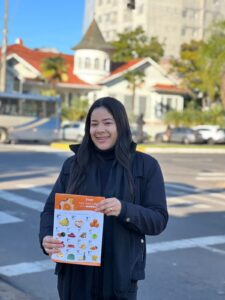

Enquanto muitos gestores de supermercados concentram seus investimentos apenas no digital, um movimento silencioso continua gerando resultados consistentes: a panfletagem estratégica.
Longe de ser uma ação ultrapassada, ela se consolida como uma ferramenta indispensável para atrair o público certo, gerar fluxo no PDV e fortalecer a presença local da marca.
Na MOBI Comunicação, acompanhamos de perto o impacto do contato direto com o consumidor — e neste artigo você vai entender por que essa estratégia ainda funciona tão bem.
1. A diferença está na estratégia
Distribuir panfletos aleatoriamente é desperdiçar recursos. A panfletagem eficiente começa com análise e planejamento.
Cada ação deve considerar o entorno, o perfil do público, as rotas de maior circulação e até o comportamento de consumo por região. Não se trata de entregar papel, mas de entregar uma mensagem com propósito.
Caso real
Em um projeto recente, realizamos a ativação de uma nova filial de supermercado na Região Metropolitana de Porto Alegre. A estratégia começou com ações porta a porta e avançou para pontos de grande fluxo, como sinaleiras e estações de trem.
Em menos de 24 horas, o cliente registrou aumento significativo no movimento — com consumidores afirmando que foram até o local após ver o panfleto.
No marketing local, quem é visto, é lembrado. E quem é lembrado, vende.
2. Dados que comprovam
O marketing offline, quando integrado ao digital, pode aumentar em até 30% a conversão das campanhas.
- Maior tempo de retenção da mensagem
- Percepção de valor mais alta
- Conexão direta com o público local
- Alto impacto em decisões de compra imediata
Segundo pesquisa da Opinion Box, 89% dos consumidores brasileiros ainda realizam compras por impulso em promoções físicas.
A panfletagem não é sobre papel. É sobre presença.

3. Bastidores que fazem diferença
O verdadeiro diferencial está na execução. Uma campanha eficiente depende de organização, equipe treinada e acompanhamento em tempo real.
Na prática, isso significa controle de distribuição, ajustes de rota e relatórios completos das ações realizadas.
Em um cenário onde tudo parece acontecer no digital, a rua continua sendo um dos ambientes mais poderosos para gerar vendas reais.
Quer movimentar seu PDV de verdade?
Saia da bolha digital e leve sua marca para onde o seu cliente realmente está.
Falar no WhatsApp